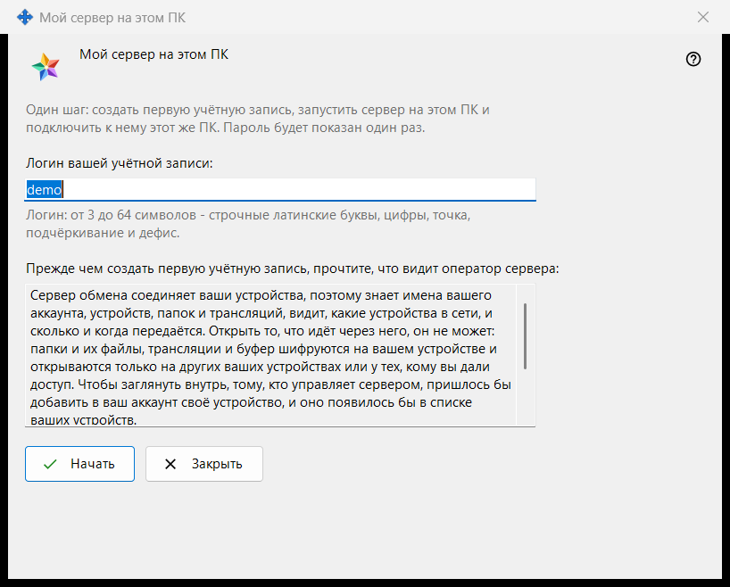
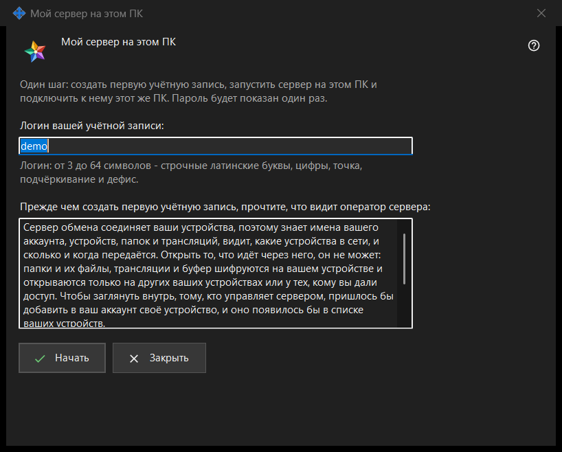

Мой сервер на этом ПК
Назначение
Настраивает личный Media Exchange Server на этом ПК за один проход: создаёт первую учётную запись, запускает сервер и подключает к нему этот же ПК. Окно открывается кнопкой «Использовать этот ПК как мой сервер..» на странице Media Exchange Server в настройках Share Manager; кнопка видна только тогда, когда на этом ПК нет настроенного сервера.


Порядок действий
- Проверьте предложенный логин, взятый из имени пользователя Windows, или введите свой.
- Прочтите, что видит оператор сервера.
- Нажмите «Начать» и дождитесь четырёх шагов.
- Сразу скопируйте пароль, затем отпечаток или строку подключения для других устройств.
- Нажмите «Закрыть».
Элементы окна
Логин
Поле «Логин вашей учётной записи:» принимает от 3 до 64 символов: строчные латинские буквы, цифры, точку, подчёркивание и дефис; заглавные буквы приводятся к строчным. Подсказка под полем окрашивается цветом предупреждения, когда текст не может быть логином, а «Начать» ничего не делает, если он не подходит.
Что видит оператор
Нередактируемое поле под строкой «Прежде чем создать первую учётную запись, прочтите, что видит оператор сервера:» перечисляет, что оператор сервера видит об учётных записях, устройствах, папках, трансляциях и буфере обмена, чего сервер прочитать не может и сколько дней хранятся журналы. На своём сервере оператор - это вы.
Шаги и сбои
«Начать» выполняет четыре шага и называет текущий: «Создаю учётную запись..», «Запускаю сервер..», «Проверяю сертификат..» и «Подключаю этот ПК..». В это время логин заблокирован, а окно не закрывается. Если учётная запись не создана, строка объясняет причину, например «Такая учётная запись уже есть - выберите другой логин.»; исправьте логин и нажмите «Начать» снова.
Итог и адреса
При успехе окно сообщает «Готово: сервер работает, учётная запись создана, этот ПК подключён к ней.» и показывает «Адрес для этого ПК:», «Адрес для других устройств:» (если адрес не задан, там написано «не задан - укажите его в настройках сервера обмена»), «Логин:», «Пароль (показан один раз):» и «Отпечаток сертификата:». Когда адрес для других устройств задан, добавляется «Строка подключения:». Если сервер не запустился, учётная запись всё равно создана, а её пароль показан ниже один раз.
Пароль и копирование
Пароль скрыт. «Показать пароль» раскрывает его, «Скопировать пароль» кладёт его в буфер обмена защищённым путём: в историю буфера Windows и в облачный буфер он не попадает. Окно показывает пароль только один раз, если не включено «Хранить пароли учётных записей на этом ПК». «Скопировать отпечаток» и «Скопировать строку» копируют обычным образом: пароля в них нет. Другим устройствам нужны адрес, логин, пароль и отпечаток, который они сверяют при первом подключении.
Закрытие
Если пароль не скопирован, не показан и не сохранён на этом ПК, «Закрыть» спрашивает «Закрыть, не скопировав пароль?» (по умолчанию выбрано «Нет»), потому что показать пароль снова нельзя - его можно только сбросить.
Настройки менеджера · Настройки общего доступа SFTP · Настройки сервера обмена